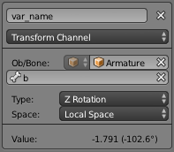
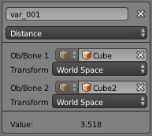

驱动器面板¶

驱动器面板。
该面板位于驱动模式下的 曲线编辑器 。
驱动器面板用于设置 驱动器变量 或者 脚本表达式 ，以计算 驱动器值。
设置¶
- 更新相关性
- 强制更新驱动器值相关性。
- 移除驱动器
- 为该属性移除驱动器。
- 类型
有两种脚本类型: 内置 (平均化值, 和值, 最小值和最大值) 与 自定义脚本 (脚本表达式)。
- 平均化值
- 使用被引用变量的平均值。
- 和值
- 使用被引用变量的和。
- 脚本表达式
- 使用脚本表达式。见表达式。用户需要输入一个Python表达式，自定义驱动变量的计算方法。
- 最小值
- 使用被引用变量的最小值。
- 最大值
- 使用被引用变量的最大值。
- 表达式
- 脚本表达式。这里用户可以使用变量，实数，数学运算符、数学函数、Python属性、驱动函数。可以参考下文示例。
- Use Self
- 使用
self变量引用自身数据。用于物体、骨骼，避免创建指向自身属性的变量。 - 显示调试
- 显示 驱动器值。
- 驱动器值
- 驱动脚本的输出值。
驱动变量¶

形变通道。 |

距离。 |
变量直接引用属性，或者引用两个属性获得的变换增量。
- 添加变量
- 添加新的驱动变量。
- 复制/粘贴
- ToDo.
- 名称
- 用于脚本表达式/函数的变量名。不允许空格或小数点，必须以字母开头。
- 变量类型
使用的变量类型。
- 单个属性
使用来自RNA属性的值。例如，材质的环境光着色颜色。首先选择标识类型，然后选择标识数据块的ID，复制并
Ctrl-V粘贴RNA属性。请参阅 自定义属性。- 标识类型
- 标识类型。例如：关键帧，图像，物体，材质。
- ID
- 数据块的ID，如: "Material.001"。
- RNA路径
- 属性的RNA ID名称，如材质着色的 'ambient' 。
- 形变通道
使用物体或骨骼的某一变换通道。
- ID
- 物体的ID。如: Cube, Armature, Camera。
- 骨骼
- 骨架中的骨骼ID。如 "Bone", "Bone.002", "Arm.r"。该选项仅适用于骨架。
- 类型
- 如, X 位移, X 旋转, X 缩放。
- 空间
- 饰界空间、形变空间、自身空间。
- 旋转差值
- 使用两个物体或骨骼的旋转差值。
- 距离
- 使用两个物体或骨骼之间的距离。
- 值
- 显示变量数值。